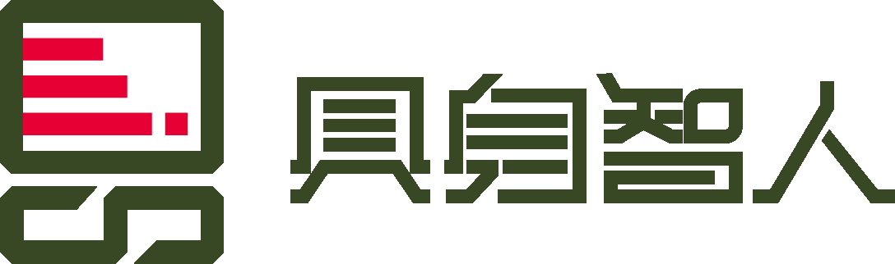

Robot SDK
面向 M1、L2 系列机器人，提供 C++17 客户端库，支持状态与传感器数据读取、运动控制、设备操作及任务控制，包含示例代码和中英文开发文档。
查看 Robot SDK →
具身智人机器人开发资源中心，面向机器人开发者、科研人员及行业合作伙伴，汇集机器人 SDK、仿真平台、URDF 模型、示例代码与开发指南，涵盖运动控制、状态获取、环境感知、导航及外设集成等开发方向。同时提供环境配置、部署调试、接口调用与常见问题说明，帮助开发者快速上手机器人平台，开展算法验证、二次开发与应用集成。
面向 M1、L2 系列机器人，提供 C++17 客户端库，支持状态与传感器数据读取、运动控制、设备操作及任务控制，包含示例代码和中英文开发文档。
查看 Robot SDK →面向 L1 系列机器人，提供高层控制接口、实时传感器状态查询、控制权仲裁和示例程序，帮助开发者开展二次开发与应用集成。
查看 L1 SDK →